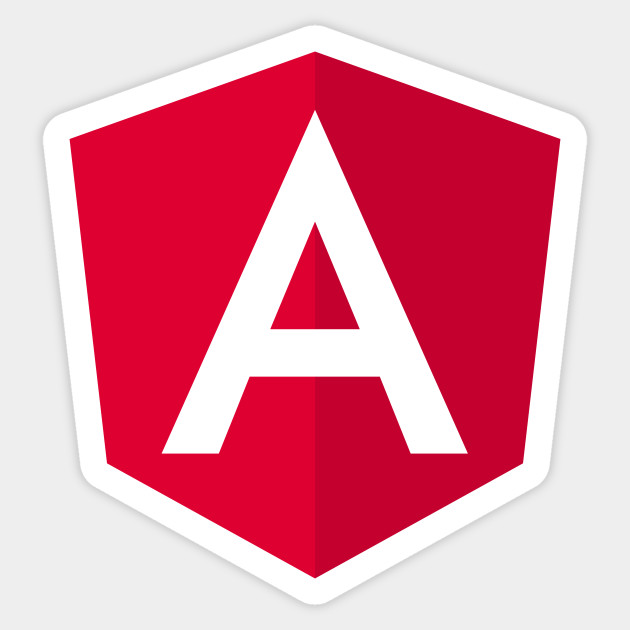
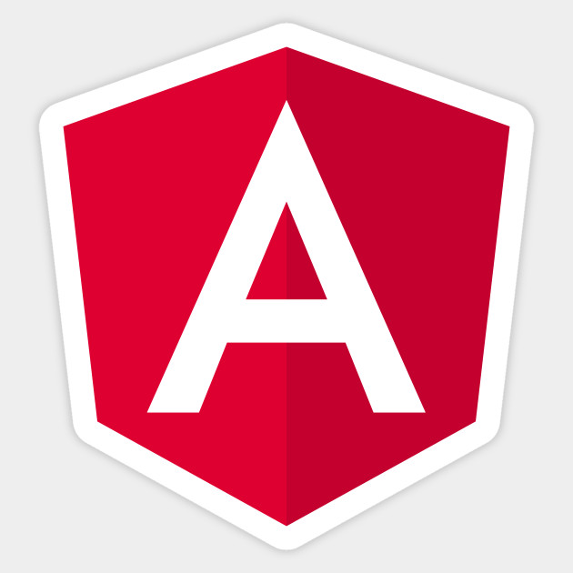
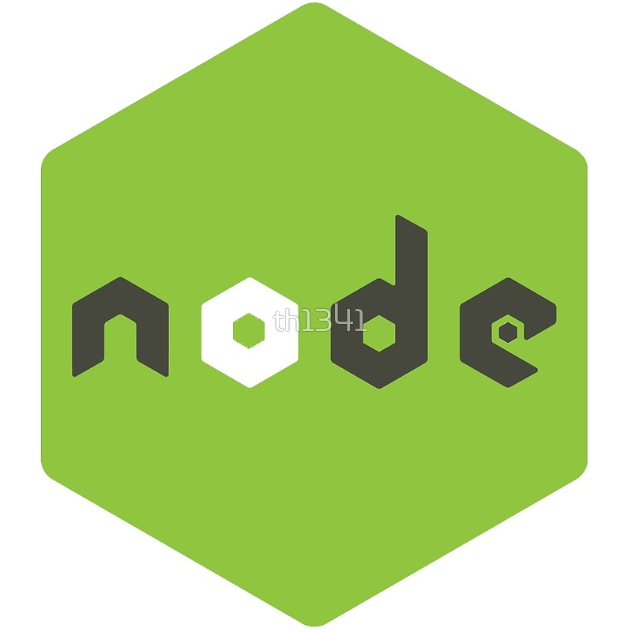
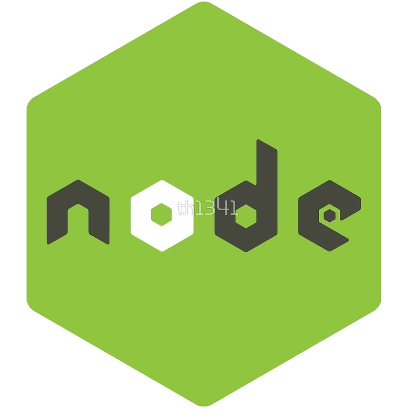

About Me . . .
Hey, my name is Shambhawi ;). I create beautiful and functional website.Basically I am a front end web developer based in Bangalore, India with over 3+ years of experience in the industry.
Making design functional and simpler is my real goal. I enjoy building website as you get see what you code. There is no hard and fast rule untill its user friendly. Key to every website development is fast,responsive,intuitive and dynamic web page.
"Perfection in design is achieved not when there is nothing to add , but rather when there is nothing more to take away"
Shambhawi Kumari
Technologies that interests . . .


 

 

I primarily use Angular, a javascript framework for front end development along with other front end technologies like HTML, CSS, Javascript, Bootstrap and so on. I am also picking up with server side technology with advent of NodeJs.
You can see some of the projects I worked on in coming up tab "Projects" So stay tuned to know more about my interest and projects that I worked on.
You can see some of the projects I worked on in coming up tab "Projects" So stay tuned to know more about my interest and projects that I worked on.
Techonologies known:
- AngularJs
- HTML
- CSS
- Bootstrap
- ES6
- Grunt
- Lodash
Working to develop skills on:
- NodeJs
- MongoDB
- AWS Cloud
Professional Experience . . .
I have been working as a Web developer at Infosys Limited, Bangalore with an overall industrial experience of around 3.8 years. Apart from web based projects, I have also tried my hands on native application, Andriod platform.
My Works . . .
Developed various front end websites for Clients like Infosys, Fidelity and so on. This would be the first time , I would be building something for me :) My Portfolio website.
Looking forward to build many more.
Looking forward to build many more.